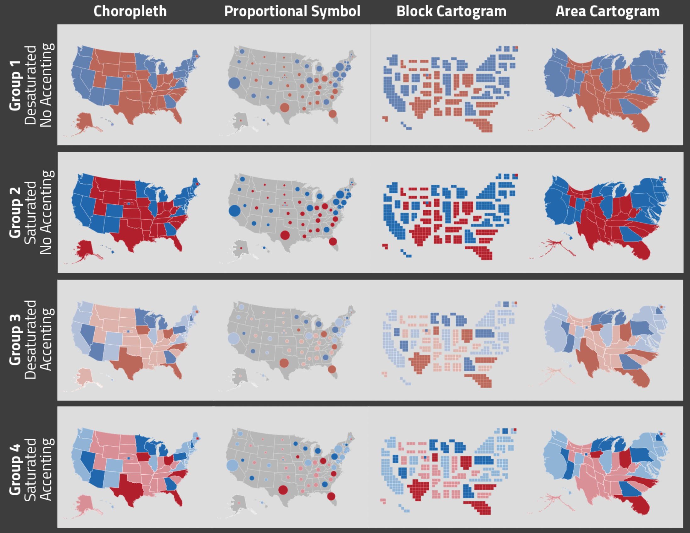

My undergraduate honors thesis, conducted at the University of Wisconsin-Madison and advised by Robert Roth, focused on U.S. election map design in data journalism. This research was inspired by the 2020 election and the variety of design techniques I saw used in major news organizations. Primarily, I noticed some news organizations used only choropleth maps for election results, despite the issues this causes with state size compared to number of electoral votes. Additionally, I noticed the Washington Post used desaturated colors, and I wondered if this choice would be perceived as more calming than vibrate colors. Finally, I noticed that some international news organizations focused on only swing states, and I experimented with visual accenting to draw attention. To conduct this research, I used a 4x2x2 factorial design with 240 online participants.
Overall, block cartogram and choropleth maps produced the highest accuracy, compared to proportional symbol and area cartogram maps. Visual accenting of swing states produced quicker responses but decreased accuracy. Color saturation did not influence accuracy, although users preferred saturated colours. Accuracy results overall did not align with preference results, and it may be best for news organizations to provide multiple types of election maps that users can toggle between.
I presented results from this research at NACIS 2022 and EuroCarto 2022. Most importantly, this project was an excellent introduction into academic research, and prepared me to conduct better and more efficient research as a graduate student. Additionally, it got me interested in the intersection of data journalism and cartography, which has been the focus of my graduate research.